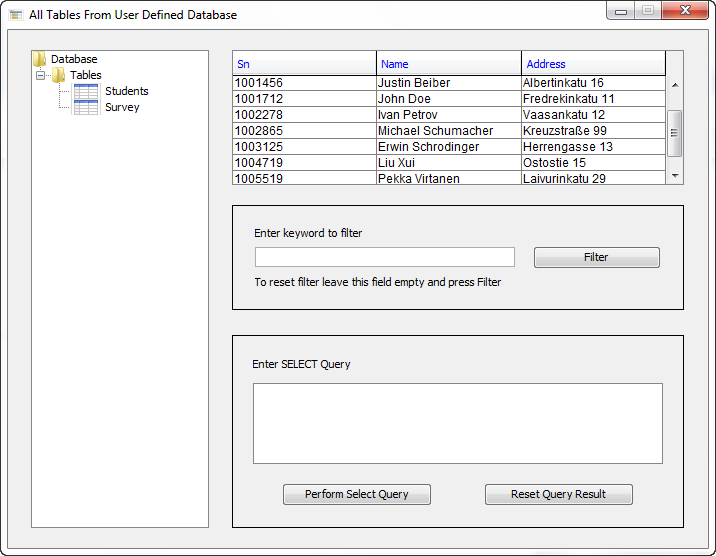
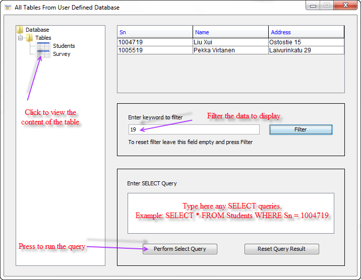

When you click on "Select MySQL Query" button you should see the following window:

This module enables users to perform simple SELECT query and process the result for all tables that are available in the database.
By clicking the table icon, its content is displayed in a table.
The content of the table can be filtered by using filter module.
Finally at the bottom text area user can type any SELECT query and execute it by clicking on "Perform Select Query" button.
The following screenshot illustrates the functionality of this module:
